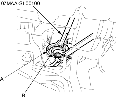
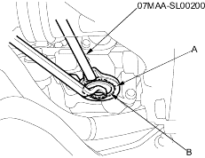
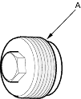
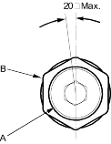

Locknut wrench, 40 mm, 07MAA-SL00100
Locknut wrench, 43 mm, 07MAA-SL00200
- Set the wheels in the straight ahead position.
- Loosen the rack guide screw locknut (A) with the special tool, then remove the rack guide screw (B).
Power Steering:
NOTE: LHD type is shown, RHD type is symmetrical.

EPS:
NOTE: RHD type is shown, LHD is symmetrical.

- Remove the old sealant from rack guide screw, and apply new sealant all around the threads (A).

- Loosely install the rack guide screw (A) on the steering gearbox.

- Tighten the rack guide screw to 25 Nm (2.5 kgf/m, 18 lbf/ft), then loosen it.
- Retighten the rack guide screw to 3.9 Nm (0.4 kgf/m, 2.9 lbf/ft) then back it off to specified angle.
Specified Return Angle: 20o Max.
- Tighten the locknut (B) to HPS Model: 25 Nm (2.5 kgf/m, 18 lbf/ft), EPS Model: 44 Nm (4.5 kgf/m, 33 lbf/ft) while holding the rack guide screw.
- Check for unusual steering effort through the complete turning travel.
- Check the steering wheel rotational play and the power assist (see page 17-4).